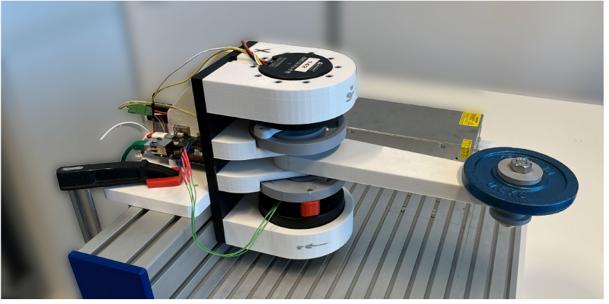
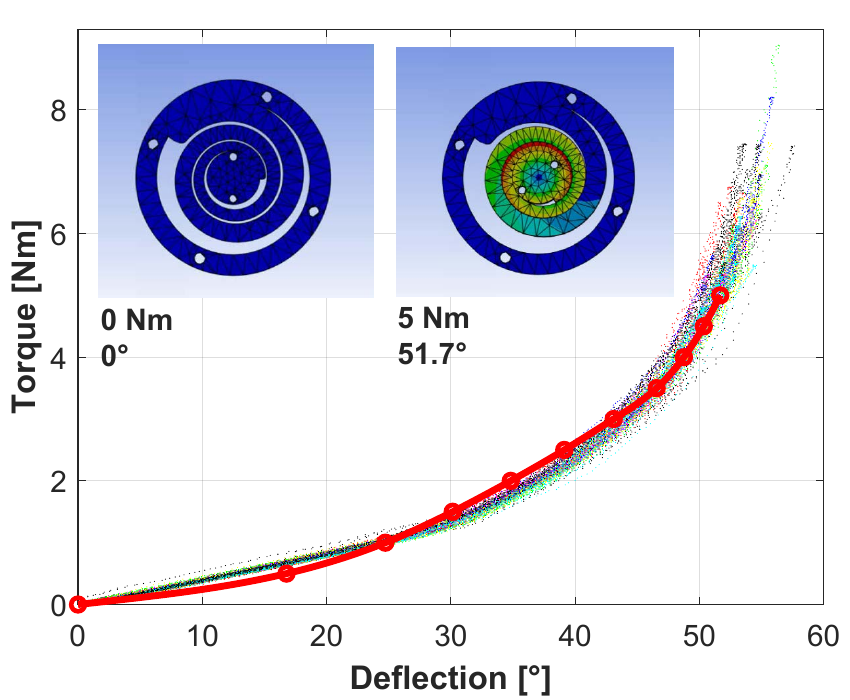
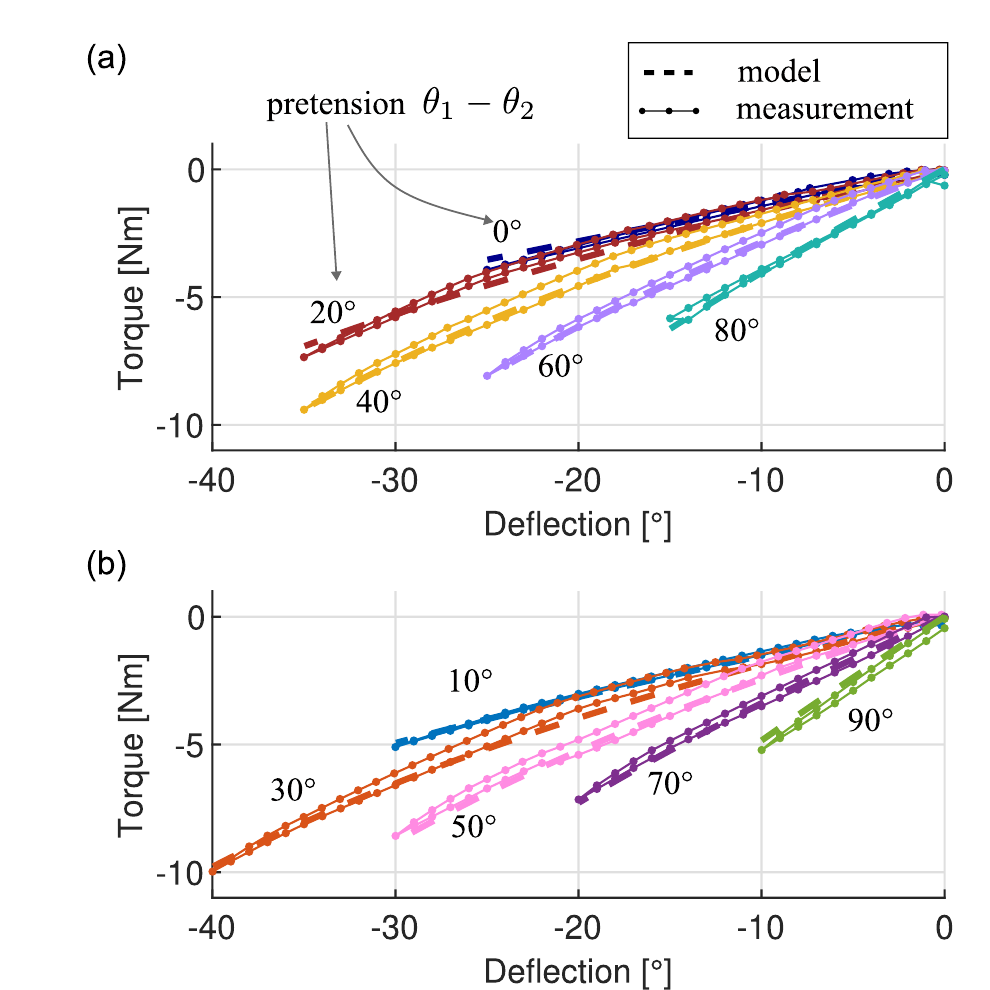

Multiarticular
variable-stiffness actuation
Shaping a robot’s response to contact through nonlinear springs and elastic connections between joints.
From joint elasticity to directional stiffness
A robot may need to yield in one direction while resisting displacement in another. Variable-stiffness actuators (VSAs) adjust this response through their elastic mechanisms. We study how springs acting across several joints change the stiffness achievable at the arm’s end point, and how to design, model and evaluate these couplings.
Elasticity within a joint
Independent monoarticular springs act on individual joints. Their combined end-point response depends on the arm’s posture and geometry. Even with adjustable joint stiffness, the set of achievable passive end-point stiffnesses is constrained.
Elasticity across joints
A biarticular elastic element spans two joints; multiarticular elements extend this principle. Deflecting one joint can then produce torque at another. This mechanical coupling offers additional ways to shape the end-point response, subject to spring, preload and actuator limits.
Reading a stiffness ellipse
In the planar case, an ellipse visualises the forces needed to hold equally sized, small end-point displacements in different directions. A longer axis means greater stiffness. Its orientation, overall scale and axis ratio describe different aspects of the response.
Conceptual illustrations, not measurements or a claim of independently achievable settings. The attainable combinations depend on the mechanism and operating point.
The relationship between joint and end-point stiffness is analysed in Höppner, Wiedmeyer and van der Smagt (2014), Section IV.
Why connect the joints mechanically?
Human limbs contain muscles that act across more than one joint. This inspires robotic mechanisms in which elastic elements link joint motions, distributing torque responses and providing a mechanical path for energy exchange.
A wider range of responses
In our earlier DLR work, a simulation study compared monoarticular and biarticular actuation at a fixed arm posture and zero end-point force. The coupled mechanism could realise more passive stiffness combinations within the tested range. The gain concerns the variety of directional responses, rather than simply making every direction stiffer. Höppner, Wiedmeyer and van der Smagt [1]
The role of posture and control
The attainable stiffness depends on the arm’s geometry, posture, spring characteristics and preload. Feedback control offers further ways to shape the response. We investigate how mechanical coupling and controlled impedance can complement each other, and where the benefit of coupling warrants its mechanical complexity.
The 2014 study establishes a modelling foundation. Extending these ideas to multiarticular systems connects spring design, transmission behaviour and the mechanics of the whole arm.
Making stiffness adjustable
3D-printed nonlinear torsional springs
A nonlinear spring changes its stiffness as it deflects. With two such springs acting antagonistically at a joint, changing their pretension changes the joint’s resistance to displacement. Our 2025 RA-L paper investigates this principle using 3D-printed torsional springs: successive contact between spring segments produces a progressive response. Höppner et al. [2]
The paper combines spring design, finite-element analysis and static and dynamic experiments on a single-joint actuator. It examines how well the springs and joint follow their models and how repeatable their behaviour is. Hysteresis and dependence on the operating range remain relevant to the design of elastic mechanisms.






Bidirectional
antagonism
In bidirectional antagonistic variable-stiffness actuation (BAVS), the two drives can assist each other in producing joint torque. We explore this principle with a one-degree-of-freedom prototype. It is a separate line of development from the antagonistic joint in the 2025 spring paper, drawing on earlier DLR research into the BAVS mechanism and its control. Mechanism [3] · Control [4]
Related expertise
VSB · ICRA 2025
Our work on variable stiffness based on Bowden cables (VSB) contributes experience in tendon-driven actuation, remote placement of elastic elements and transmission behaviour. It is a complementary mechanism for robotic hands. Paper [5] · SIRo Soft Hand
Selected literature and patent
The following publications document the foundations and related expertise. Each addresses a specific mechanism, model or experimental setup.
- H. Höppner, W. Wiedmeyer and P. van der Smagt. A new biarticular joint mechanism to extend stiffness ranges. IEEE ICRA, 3403–3410, 2014. Full text.Biarticular mechanism and simulated attainable stiffness.
- H. Höppner, A. Kirner, J. Göttlich, L. Jakob, A. Dietrich and C. Ott. Variable Stiffness Actuation via 3D-Printed Nonlinear Torsional Springs. IEEE Robotics and Automation Letters, 10(5), 4324–4331, 2025.Printed springs, finite-element comparison and experimental single-joint actuation.
- F. Petit, W. Friedl, H. Höppner and M. Grebenstein. Analysis and Synthesis of the Bidirectional Antagonistic Variable Stiffness Mechanism. IEEE/ASME Transactions on Mechatronics, 20(2), 684–695, 2015.BAVS theory and validation on a DLR Hand Arm System joint.
- M. C. Harder, M. Keppler, X. Meng, C. Ott, H. Höppner and A. Dietrich. Simultaneous Motion Tracking and Joint Stiffness Control of Bidirectional Antagonistic Variable-Stiffness Actuators. IEEE Robotics and Automation Letters, 7(3), 6614–6621, 2022. Accepted manuscript.Motion and stiffness control, with experiments on the DLR David forearm joint.
- S. Puhlmann, A. Albu-Schäffer and H. Höppner. VSB – Variable Stiffness Based on Bowden Cables: A Simple Mechanism for Soft Robotic Hands. IEEE ICRA, 5556–5562, 2025.Complementary expertise in tendon transmission and variable stiffness for hands.
Further background: stiffness, control and actuator design
- N. Hogan. The mechanics of multi-joint posture and movement control. Biological Cybernetics, 52, 315–331, 1985. Directional stiffness and multi-joint mechanics.
- A. Albu-Schäffer, M. Fischer, G. Schreiber, F. Schoeppe and G. Hirzinger. Soft Robotics: What Cartesian Stiffness Can We Obtain With Passively Compliant, Uncoupled Joints? IEEE/RSJ IROS, 3295–3301, 2004. Passive stiffness limits and compensating control.
- S. Wolf et al. Variable Stiffness Actuators: Review on Design and Components. IEEE/ASME Transactions on Mechatronics, 21(5), 2418–2430, 2016. Actuator design choices and trade-offs.
Research team
Linnéa Jakob
Nonlinear spring design, mechanical modelling and elastic joint coupling.
Prof. Dr.-Ing. Hannes Höppner
Principal investigator. Variable-stiffness mechanisms, biarticular actuation and research direction.
Research information reviewed in October 2026.